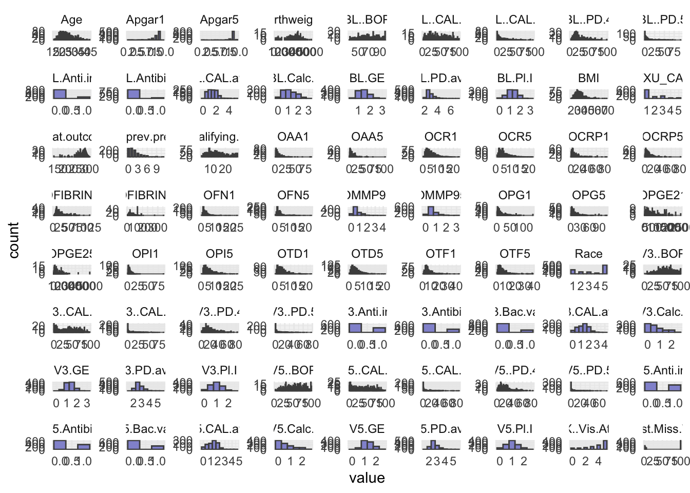
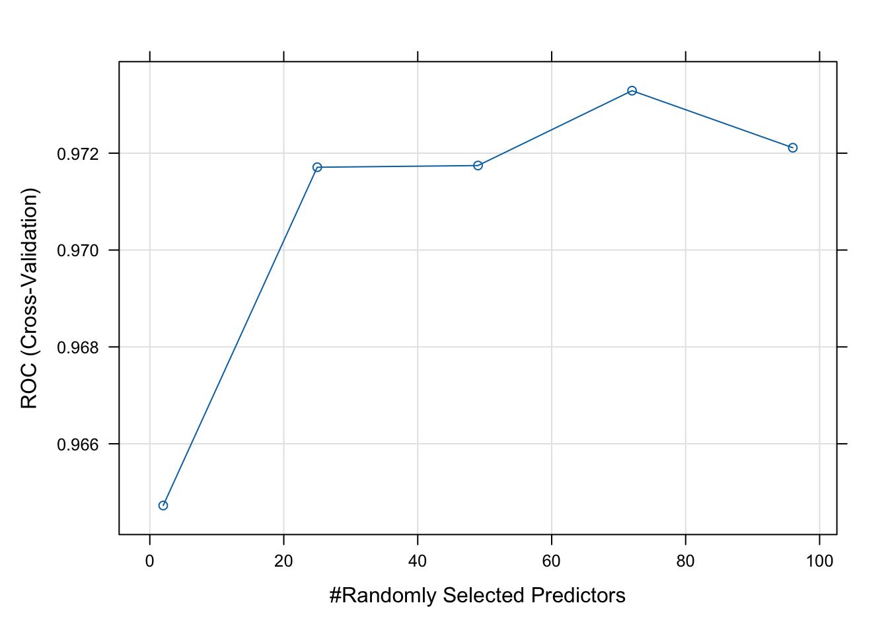

In this part you will run a K-means clustering. You will work with a dataset from patients with kidney disease. The dataset contains approximately 20 biological measures (variables) collected across 400 patients. The outcome is the classification variable which denotes whether a person suffers from ckd=chronic kidney diseaseckd or not notckd.
Below is a description of the variables in the dataset:
age - age
bp - blood pressure
rbc - red blood cells
pc - pus cell
pcc - pus cell clumps
ba - bacteria
bgr - blood glucose random
bu - blood urea
sc - serum creatinine
sod - sodium
pot - potassium
hemo - hemoglobin
pcv - packed cell volume
wc - white blood cell count
rc - red blood cell count
htn - hypertension
dm - diabetes mellitus
cad - coronary artery disease
appet - appetite
pe - pedal edema
ane - anemia
class - classification
Load the R packages needed for analysis. If you are in doubt about what packages you need, look at Presentation 5B. You will need to do some data-wrangling and will also need a package for K-means clustering and visualization.
library(tidyverse)
── Attaching core tidyverse packages ──────────────────────── tidyverse 2.0.0 ──
✔ dplyr 1.1.4 ✔ readr 2.1.5
✔ forcats 1.0.0 ✔ stringr 1.5.1
✔ ggplot2 3.5.2 ✔ tibble 3.2.1
✔ lubridate 1.9.4 ✔ tidyr 1.3.1
✔ purrr 1.0.4
── Conflicts ────────────────────────────────────────── tidyverse_conflicts() ──
✖ dplyr::filter() masks stats::filter()
✖ dplyr::lag() masks stats::lag()
ℹ Use the conflicted package (<http://conflicted.r-lib.org/>) to force all conflicts to become errors
library(factoextra)
Welcome! Want to learn more? See two factoextra-related books at https://goo.gl/ve3WBa
library(ggplot2)
Load in the dataset named kidney_disease.Rdata.
#in caseload("../data/kidney_disease.Rdata")
Before running K-means clustering please remove rows with any missing values across all variables in your dataset - yes, you will lose quite a lot of rows. Consider which columns you can use and if you have to do anything to them before clustering?
# Set seed to ensure reproducibilityset.seed(123) # remove any missing valueskidney <- kidney %>%drop_na() # scale numeric values and only use thesekidney_num <- kidney %>%mutate(across(where(is.numeric), scale)) %>% dplyr::select(where(is.numeric))
Run the k-means clustering algorithm with 4 centers on the data. Look at the clusters you have generated.
# Set seed to ensure reproducibilityset.seed(123) # run kmeanskmeans_res <- kidney_num %>%kmeans(centers =4, nstart =25)kmeans_res
Visualize the results of your clustering. Do 4 clusters seems like a good fit for our data in the first two dimensions (Dim1 and Dim2)? How about if you have a look at Dim3 or Dim4?
Now, try to figure out what the two clusters might represent. There are different ways to do this, but one easy way would be to simply compare the clusters IDs from the Kmeans output with one or more of the categorical variables from the dataset. You could use count() or table() for this.
table(kidney$htn, kmeans_res$cluster)
1 2
no 118 7
yes 2 32
table(kidney$dm, kmeans_res$cluster)
1 2
no 119 12
yes 1 27
table(kidney$classification, kmeans_res$cluster)
1 2
ckd 4 39
notckd 116 0
The withiness measure (within cluster variance/spread) is much larger for one cluster then the other, what biological reason could there be for that?
Part 2: Random Forest
For our Random Forest model we will use the Obstetrics and Periodontal Therapy Dataset, which was collected in a randomized clinical trial. The trail was concerned with the effects of treatment of maternal periodontal disease and if it may reduce preterm birth risk.
This dataset has a total of 823 observations and 171 variables. As is often the case with clinical data, the data has many missing values, and for most categorical variables there is an unbalanced in number of observations for each level.
In order for you to not spend too much time on data cleaning and wrangling we have selected 33 variables (plus a patient ID column, PID) for which we have just enough observations per group level.
Summary Statistics
Load the R packages needed for analysis. As for Part 1 above, have a look at the accompanying presentation for this exercise to get an idea of what packages you might need.
N.B that you may have some clashes of function names between these packages. Because of this, you will need to specify the package you are calling some of the functions from. You do this with the package name followed by two colons followed by the name of the function, e.g. dplyr::select()
Load in the dataset Obt_Perio_ML.Rdata and inspect it.
load(file ="../data/Obt_Perio_ML.Rdata")
Do some basic summary statistics and distributional plots to get a feel for the data. Which types of variables do we have?
# Reshape data to long format for ggplot2long_data <- optML %>% dplyr::select(where(is.numeric)) %>%pivot_longer(cols =everything(), names_to ="variable", values_to ="value")# Plot histograms for each numeric variable in one gridggplot(long_data, aes(x = value)) +geom_histogram(binwidth =0.5, fill ="#9395D3", color ='grey30') +facet_wrap(~ variable, scales ="free") +theme_minimal()

Some of the numeric variables are actually categorical. We have identified them in the facCols vector. Here, we change their type from numeric to character (since the other categorical variables are of this type). This code is sightly different from changing the type to factor, why we have written the code for you. Try to understand what is going on.
# A tibble: 6 × 89
PID Apgar1 Apgar5 Birthweight GA.at.outcome Any.SAE. Clinic Group Age
<chr> <dbl> <dbl> <dbl> <dbl> <chr> <chr> <chr> <dbl>
1 P10 9 9 3107 278 No NY C 30
2 P170 9 9 3040 286 No MN C 20
3 P280 8 9 3370 282 No MN T 29
4 P348 9 9 3180 275 No KY C 18
5 P402 8 9 2615 267 No KY C 18
6 P209 8 9 3330 284 No MN C 18
# ℹ 80 more variables: Race <chr>, Education <chr>, Public.Asstce <chr>,
# BMI <dbl>, Use.Tob <chr>, N.prev.preg <dbl>, Live.PTB <chr>,
# Any.stillbirth <chr>, Any.live.ptb.sb.sp.ab.in.ab <chr>,
# EDC.necessary. <chr>, N.qualifying.teeth <dbl>, BL.GE <dbl>, BL..BOP <dbl>,
# BL.PD.avg <dbl>, BL..PD.4 <dbl>, BL..PD.5 <dbl>, BL.CAL.avg <dbl>,
# BL..CAL.2 <dbl>, BL..CAL.3 <dbl>, BL.Calc.I <dbl>, BL.Pl.I <dbl>,
# V3.GE <dbl>, V3..BOP <dbl>, V3.PD.avg <dbl>, V3..PD.4 <dbl>, …
Make count tables of your categorical/factor variables, are they balanced?
# Count observations per level/group for each categorical variablefactor_counts <- optML[,-1] %>% dplyr::select(where(is.character)) %>%pivot_longer(everything(), names_to ="variable", values_to ="level") %>%arrange(variable) %>% dplyr::count(variable, level, sort =FALSE)factor_counts
# A tibble: 66 × 3
variable level n
<chr> <chr> <int>
1 Any.SAE. No 865
2 Any.SAE. Yes 135
3 Any.live.ptb.sb.sp.ab.in.ab No 432
4 Any.live.ptb.sb.sp.ab.in.ab Yes 568
5 Any.stillbirth No 894
6 Any.stillbirth Yes 106
7 BL.Anti.inf 0 853
8 BL.Anti.inf 1 147
9 BL.Antibio 0 924
10 BL.Antibio 1 76
# ℹ 56 more rows
Random Forest Model
Now, let’s try a Random Forest classifier. As we cannot model with multiple outcome variables, so we will select Preg.ended...37.wk as our outcome of interest. This variable is a factor variable which denotes if a women gave birth prematurely (1=yes, 0=no).
Remove the other five possible outcome variables measures from the dataset, i.e.: GA.at.outcome, Birthweight, Apgar1, Apgar5 andAny.SAE.. You will need to take out one more variable from the dataset before modelling, figure out which one and remove it.
The R-package we are using to make a RF classifier requires the outcome variable to be categorical. As Preg.ended...37.wk is encoded as numeric (0 and 1), you will need to change these to categories!
Split your dataset into train and test set, you should have 70% of the data in the training set and 30% in the test set. How you chose to split is up to you, BUT afterwards you should ensure that for the categorical/factor variables all levels are represented in both sets.
set.seed(123)idx <-createDataPartition(optML$Preg.ended...37.wk, p =0.7, list =FALSE)train <- optML[idx, ]test <- optML[-idx, ]
# A tibble: 64 × 3
variable level n
<chr> <chr> <int>
1 Any.live.ptb.sb.sp.ab.in.ab No 128
2 Any.live.ptb.sb.sp.ab.in.ab Yes 171
3 Any.stillbirth No 274
4 Any.stillbirth Yes 25
5 BL.Anti.inf 0 252
6 BL.Anti.inf 1 47
7 BL.Antibio 0 281
8 BL.Antibio 1 18
9 Bact.vag No 271
10 Bact.vag Yes 28
# ℹ 54 more rows
Set up a Random Forest model with cross-validation. See pseudo-code below. Remember to set a seed.
set.seed(123)# Set up cross-validation: 5-fold CVRFcv <-trainControl(method ="cv",number =5,classProbs =TRUE,summaryFunction = twoClassSummary,savePredictions ="final")# Train Random Forestset.seed(123)rf_model <- caret::train( Preg.ended...37.wk ~ ., # formula interfacedata = train,method ="rf", # random foresttrControl = RFcv,metric ="ROC", # optimize AUCtuneLength =5# try 5 different mtry values)# Model summaryprint(rf_model)
Random Forest
701 samples
82 predictor
2 classes: 'No', 'Yes'
No pre-processing
Resampling: Cross-Validated (5 fold)
Summary of sample sizes: 561, 561, 560, 562, 560
Resampling results across tuning parameters:
mtry ROC Sens Spec
2 0.9647253 1.0000000 0.9317299
25 0.9717093 0.9978495 0.9359852
49 0.9717448 0.9914436 0.9444958
72 0.9732898 0.9849920 0.9444958
96 0.9721122 0.9700297 0.9488437
ROC was used to select the optimal model using the largest value.
The final value used for the model was mtry = 72.
Plot your model fit. How does your model improve when you add 10, 20, 30, etc. predictors?
# Best parametersrf_model$bestTune
mtry
4 72
# Plot performanceplot(rf_model)

Use your test set to evaluate your model performance. How does the random forest compare to the elastic net regression?
# Predict class probabilitiesy_pred <-predict(rf_model, newdata = test, type ="prob")y_pred <-as.factor(ifelse(y_pred$Yes >0.5, "Yes", "No"))caret::confusionMatrix(y_pred, test$Preg.ended...37.wk)
Confusion Matrix and Statistics
Reference
Prediction No Yes
No 199 3
Yes 1 96
Accuracy : 0.9866
95% CI : (0.9661, 0.9963)
No Information Rate : 0.6689
P-Value [Acc > NIR] : <2e-16
Kappa : 0.9696
Mcnemar's Test P-Value : 0.6171
Sensitivity : 0.9950
Specificity : 0.9697
Pos Pred Value : 0.9851
Neg Pred Value : 0.9897
Prevalence : 0.6689
Detection Rate : 0.6656
Detection Prevalence : 0.6756
Balanced Accuracy : 0.9823
'Positive' Class : No
Extract the predictive variables with the greatest importance from your fit.
Make a logistic regression using the same dataset (you already have your train data, test data). How do the results of Elastic Net regression and Random Forest compare to the output of your glm.
# Modelmodel1 <-glm(Preg.ended...37.wk ~ ., data = train, family ='binomial')
Warning: glm.fit: fitted probabilities numerically 0 or 1 occurred
# Filter for significant p-values and convert to tibblemodel1out <-coef(summary(model1)) %>%as.data.frame() %>%rownames_to_column(var ='VarName') %>%filter(`Pr(>|z|)`<=0.05& VarName !="(Intercept)")model1out